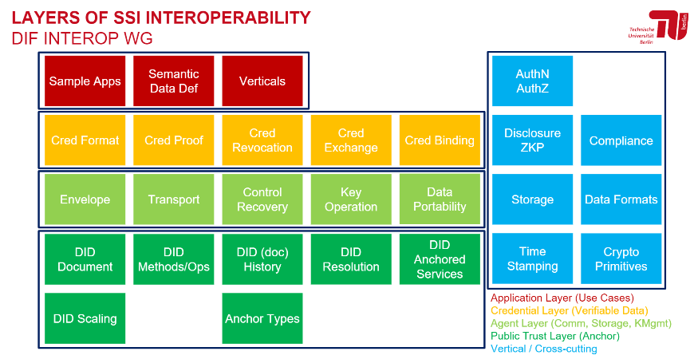

§ DIF FAQ
You Are Here (or should be): https://identity.foundation/faq
- Editors:
- Juan Caballero
- Participate:
- GitHub repo
- Contribute by opening a PR here
- File a bug
- Commit history
§ Usage guide:
§ How did I get here? Who are you?
This is a general-purpose collection of frequently-asked questions, initiated/straw-manned by some regular contributors to the DIF Interoperability Working Group, DIF Staff, and volunteers organized on DIF’s member Slack.
It is not now and likely will never be an exhaustive reference, but rather a broadly-useful resource to help people understand what they don’t understand, find their people, get involved in the best possible place, and level-set with their interlocutors there.
§ How was this FAQ made and how do I request changes or additions?
This mini-site was made using Spec-Up, DIF’s in-house spec-authoring tool that consumes GitHub-flavored Markdown (with a few additional bells and whistles) and publishes JS-enabled HTML to a github pages branch. Please use issues to request minor changes or new sections, or PRs if you are proposing both questions AND respective answers.
§ What are these symbols next to questions?
Each question is marked with 🟢, 🟡, or 🟠 to mark the relative level of familiarity it presumes. Here is the key:
| Symbol | Meaning |
|---|---|
| 🟢 | Little technical background |
| 🟡 | moderately tech-savvy |
| 🟠 | Dedicated identity pro |
| 🔥 | Controversial topic |
| 🔥🔥 | Very Controversial topic |
One strategy for learning is to read through in three separate passes, i.e., expand and read all the 1-star questions first, then reload the page and do the same for all the 2-star questions, then the 3-stars. They are not sorted by level because they progress down rabbit holes, and are intended to be readable in various orders. If you don’t understand the placement of chilis warning you about triggering, controversial topics, don’t worry-- understanding the controversies is level 4. When you not only understand why all those chili are there, but furthermore feel torn and sympathetic to all parties in each controversy, you’re at level 5-- and should maybe think about chairing a working group or joining one of the Steering Committees?
§ How is this FAQ structured?
The high-level categories on the sidebar refer to a “layer cake” mental model which organizes the space of decentralized identity into interlocking and interdependent subsystems. This can be a little “inside baseball” at first, but with time, the utility and consequence of this layering should grow more intuitive and less arbitrary. Modeled on the It originated in the DIF Interoperability WG’s months-long iterative discussion on interoperability and integration with centralized/industry-strandard prior art, which in turn built on Executive Director Rouven Heck’s iteration on the 📄ToIP 4-layer paradigm.
 Simplified 4+1 layering diagram
Src: Hakan Yildiz, Technische Universität Berlin; 📄more detailed version
§ Introductory Concepts (“Layer 0”)
§ Objects & Data Models
§ What is a DID? 🟢
In short, it’s an address on the internet that someone called a subject (you, a company, a device) can “own” and control directly, like a username but randomly generated. It can be used to find a connected “DID document” which is like a business card, providing extra information for finding or contacting or checking the signatures of that subject; that subject can update or remove that “listing” over time, directly.
These identifiers are called “decentralized” because each is registered and resolved on autonomous “namespaces” (see below), which are often closely coupled to specific public-readable DLTs like blockchains or DAGs that, by publishing addressing records immutably, function as “verifiable data registries” for their specific kind of identifiers. The most general category, though, is “VDR” because these do not necessarily have to take the form of blockchains, clouds, networks, or anything else-- a VDR could be paper-based and still decentralized! (We would have to name it after Jorge Luis Borges if we made such a registry.)
Strictly speaking, a DID is a string that functions as an address, but sometimes people might use the term to refer both to the DID and the DID Document that you get when you use a “DID Method” to resolve it. A DID without a DID Document is like a dead end!
§ What is a DID “prefix”? 🟢
Each DID is prefixed with a reference to, and only guaranteed to useful, meaningful, and reliable within, one DID namespace. If you come across a DID in the wild, this prefix makes it easy to identify its origin and where to go to “use” it for fetching a DID Document. A DID from the Sovrin network, for example, begins with “did:sov:…”, and one from the Veres One network begins with “did:v1:…” Each “namespace” (addressing system) is navigated with and governed by a “DID Method.” Some methods have multiple networks/namespaces, but each namespace is governed by one method. A list of all registered prefixes can be found here.
§ What is a “DID Method”? 🟢
You can think of a DID Method as a black box-- if you type in a DID, you get back a DID Document. Press the “new DID” button and enter some information, you will get control of a new DID. If it’s not a simple machine, it’s not a very useful DID Method!
Each DID is a publically-specified micro-protocol containing namespace rules, CRUD and resolution mechanics, references to all dependencies such as standardized cryptographic signatures schemes, and sometimes even models and algorithms specific to one set of infrastructure such as a blockchain protocol governed elsewhere. Each “DID method” has unique characteristics and infrastructures, with particular strengths and weaknesses; even their security guarantees and privacy engineering vary widely, so it can be dangerous to assume they are all equal and interchangeable. Each is like a little internet unto itself!
Each “DID method” encodes and specifies a set of interdependent governance, publication, and discovery mechanisms for DIDs in a given DID namespace.
§ What exactly is a “Namespace”, in simple terms? 🟢
Namespace here means a universe of possible names, each of which is unique and ideally as collision-free as possible, and in most cases completely opaque and/or non-human-readable. Namespaces can be private or public or have complex access levels or forwarding systems, but if one name resolves to two different destinations in the same namespace depending on the context or who’s asking or random luck, you’ve got a problem! Examples of namespaces include: US phone numbers, phone numbers in the 415 area code, all the phone numbers on earth, IPv4 and IPv6, the 5-digit or 9-digit US zip codes, all the postal codes in Thailand, etc etc.
§ What are Verifiable Credentials (“VC”)? 🟢
In short, they are a portable list of claims about a subject signed by one or more authority.
Verifiable Credentials combine properties and superpowers from many different mental models and forms of prior art; Linked Data, JSON Web Tokens, Ontologies, ETL systems. They are like portable, free-floating data points, which are not exactly documents or files or “records” in the usual sense. They are signed and thus tamper-evident, and thus share much of the verifiability of blockchain data or signed PDFs insofar as the signatures they contain can be properly verified by reference to the identities included inside the document.
They can be encrypted or not, they can identify their subject directly or indirectly using DIDs or any other kind of address and/or indirection mechanism. They can be public or private or somewhere in between, large or small, long-lasting or ephemeral. For the different categories or “flavors” of VC, see the section on Layer 3 below.
§ What is a Wallet? 🟢
In short, a wallet stores magic gibberish passwords (private keys) and magic fridge-magnet poetry (seed phrases) that help end-users control DIDs and other kinds of accounts like blockchain addresses or high-security multi-factor log-ins.
Controlling, updating, and proving control of a DID (or, for that matter, a cryptocurrency address, an NFT, or many other kinds of digital assets) requires a private key, which isn’t very secure or useful if copies of it are drifting around the open web like flotsam. For this reason, private keys are managed by specialized software generally called a “wallet” or an “authenticator”, since they have to do complex, high-security operations to avoid leaking private keys while still producing unique signatures with those private keys every time proof is needed that they possess them (in different context, these private-key operations can be called “signing”, “authentication”, “interactive proof”, etc).

In the identity context, however, a wallet can also store and present VCs, which require proof of control of a private key to be considered verifiable at a given point in time. For this reason, cryptocurrency wallets (that only manage control keys for cryptocurrency accounts) are usually distinguished from identity wallets (that control keys for receiving and verifiably presenting verifiable credentials). That said, there is no good reason one wallet couldn’t do both, and some day soon they probably will! See the Layer 4 section for more detail on wallets in general and the Universal Wallet in particular, and Layer 5 for architectural questions. Heck, just CTRL-F and search for “wallet”!
§ Core Concepts
§ What is so decentralized about a DID? 🟢
Ever heard the phrase, “not your keys, not your account?” The variously “direct” control of a DID makes it different than identifiers managed by a central database, registry, or database-- i.e., 99% of today’s identifier systems.
What makes a DID decentralized isn’t the DID itself or what you can do with it, but how you got the DID and how it relates to the outside world. Each “DID Method” represents the governance and groundrules of an experimental new form of addressing system or namespace. How decentralized it is depends on the specific system, as they are all designed to make specific compromises and design choices.
In the most decentralized of these, addresses can be generated and/or registered confidentially by any party, as on public blockchains; in all, some amount of independence, confidentiality, and privacy is guaranteed in the registration process. Regardless of how access to registration of them is gated, DIDs are like email addresses or URLs, except they return key material for encrypted communications and data operations. Thus, they enable decentralized communications and identity operations that might otherwise be hard to build from the ground up. At least, they will, once the tools DIF is fostering and promoting go mainstream and enable anyone with a DID to start using it in powerful ways.
§ What is so decentralized about a VC? 🟢
Verifiable Credentials have two superpowers-- verifiability (they are digitally signed in a tamperproof way, like a signed PDF, which can be verified independently of and privately from the signer) and portability (they are designed to be interpretable outside of their original context, and contain mechanisms for reconstructing and interpreting that context independently as well).
Think of VCs as decentralized data, or if you are coming from the blockchain world, as off-chain data. You might need to reference one or more verifiable data registries to fully verify, parse, and consume it, but in and of itself it’s an atomic little unit of free-floating verifiable data, with long-lasting and autonomous meaning and value in it. Parsing it with reference to an immutable or public data source is not the same as needing to confirm its validity with the central servers of its issuer! Which brings us to…
§ The “roles” of decentralized verification (aka the “trust triangle”) 🟢
Verifiable Credentials contain information, which is only verifiable relative to certain roles. An Issuer put that verifiable credential into the world and signed it-- it contains claims about the world, or more specifically, claims about one or more data subjects (not always human or individual). Anyone legitimately consuming or verifying that credential is referred to as a Verifier. A subject is, or has a verifiable, provable trust relationship with, a credential’s intended Holder; a credential needs to contain some kind of reference to that holder allowing it to authenticate itself as being legitimate. Depending on the use-case, there might be many more than three stakeholders or topologies represented, but this threesome is the core of the drama.
Importantly, Issuers and Verifiers are variously firewalled from one another in SSI thinking. If a verifier know too much about the issuer, or the issuer knew too much about which verifiers are seeing their credentials, all of this work and complexity would be hard to justify! That firewall is essential to the empowerment of the holder and/or subject.
§ Is decentralized identity a philosophy or a technology? 🟡🔥
Decentralization (or, in its more emphatic and radical form, re-decentralization) is a broad philosophy that sees distributing power and data more horizontally as a societal goal, an economic goal, and/or a technological goal. Most people working in this space consider themselves to be working towards that end, but not everyone agrees on exactly what it should look like, nor on whether everyone else in the space is likely making a net-positive contribution to it! Ideology is tricky that way.
More importantly, it is DIF’s position that the technology we support and foster is a necessary but insufficient means to that end; we do not want to overpromise, so we consider any good-faith effort at decentralization that relies on the building blocks of DIDs and/or VCs to be within our scope and remit. We are a technology organization, so our boundaries are set by the standardization done to date centered on the W3C specifications, not by ideological definitions.
§ Is decentralized identity different from self-sovereign identity? 🟡🔥
The two building blocks of DIDs and VCs, which decentralize addressing/identifier systems and make data portable and verifiable, enable new, decentralized ways of representing and protecting data and structuring software. These tools can be applied to individual human identity use-cases, but they can be applied to collective non-human identities as well. Sovereignty and privacy are social values that can be confusing when describing a tax record, or a non-profit corporation, or a DAO or a smart meter; in these cases, independence, confidentiality, and autonomy are more useful technological terms. All of these are use-cases for decentralized identity.
Certain codifications of these decentralized ways of handling claims about and communications with humans are referred to as “self-sovereign,” with varying degrees of technological specificity. Since these codifications are not primarily technological but belong to human values and social structures, it is difficult for DIF to draw the boundary between what is or is not a “self-sovereign” use of decentralized identity technologies. Our scope and remit is properly technological, so we are eagerly supportive of all decentralized identity technologies, whether they be supportive of self-sovereign applications or not.
Using DIDs (Decentralized Identifiers) and VCs (Verifiable Credentials) does not automatically lead to decentralized infrastructure and decentralization of authority. Mileage may vary when expecting social outcomes from technological measures.
§ Identifiers and Namespaces (“Layer 1”)
§ DIDs versus other identifiers
§ Is Decentralized identity a subset of IAM, or a totally new paradigm? - 🟡️
Either, depending on your attitude and your use cases! Identity and Access Management tends to be associated with centralized hierarchies of delegation (i.e., the “Access Control List” approach, credentials that “phone home” to their issuer at each use, etc.). Centralized and/or “Federated” architectures are common in today’s IAM, but they are not inherent to IAM: many IAM companies are rolling out products and systems for managing and provisioning decentralized identities and/or verifiable credentials at enterprise scale. If those identities and credentials are portable and interoperable, that’s decentralized enough for this decentralized identity foundation! But for many use-cases or ideologies, any “go-between” or mediation is too much, particularly when it comes to censorship-resistance or anonymity.
IAM can be more or less decentralized, and decentralized tools can be used to centralized ends. Technological decentralization doesn’t guarantee decentralization of business models or power structures in the real world! And it might not even be a good thing if they did. 🔥
§ Why aren’t x509 and DIDs compatible? Why aren’t DIDs and eIDAS compatible? 🟡️
They are! VCs are neutral and un-opinionated by design as to what kinds of identifier URIs are provided for issuer and holder identification. DID methods could be designed to use x.509 structures to manage key material for DIDs, or simply contain x.509 addresses in their DID:Documents. For bibliography on eIDAS and DIDs, see the Vienna Identity Meetup and SSI Meetup recordings on the subject.
Whether or not a specific x.509 system is decentralized enough, or private enough, is up for debate-- but there is no technological conflict, and plenty of work has been commissioned by governments around the world to align their existing identity/transaction auditing infrastructures with this new paradigm for verifiable credentials.
§ What’s the difference between a DOI or other “persistent identifier” and a DID? 🟡️
DOIs are static and centrally managed/overseen; DIDs are self-managed and self-updateable.
Digital Object Identifiers (DOIs) are the most famous form of persistent identifier, and differ in two main aspects from decentralized identifiers: on the one hand, they are very centralized, in that one global registry of all DOIs is maintained and governed by a non-profit called the International DOI Foundation or IDF. On the other, they are static in both senses of the word: they are neither updatable/reusable nor interactive, which are the two main superpowers of DIDs.
There are, however, many more persistent identifiers, some of them less centralized and some of them more interactive or dynamic. Indeed, a whole community working with such “PIDs” exist, primarily in the fields of library science, academic publishing, and other fields where unique identifiers and namespaces for opaque identifiers are of paramount importance. For more information about that other world, see Markus Sabadello’s article on our blog, “DIDs are PIDs”.
§ Diversity Between DID Methods
§ Who governs each DID Method? 🟢
Whoever creates a method and documents it is expected to register it if they want anyone to use it and consider it a method for broad use. There is no central committee deciding what DID methods are legitimate or not-- each Method is responsible for its own specification, governance, and maintenance/evolution; registration is not evaluative, merely an aid to discovery and interoperability. To get evaluative feedback or peer review before publishing a method, open standards venues like ours here at the DIF are the best place to compare notes and align on concepts. (Our Identifiers and Discovery WG is a particularly good place for such feedback.,)
§ How do I find out more about a given DID “method” 🟡
There is a handy list maintained by volunteers from the W3C-CCG, you can just read it! There is no membership fee, gatekeeper, or velvet rope.
All methods are expected to be maintainers of systems and infrastructure that are built on top of them. They are each specified by a published, registered, and ideally well-maintained specification. This specification explains how to validate a DID (namespace rules), where to query and what to expect back when resolving a DID, etc. The registry of compliant specifications for DID Methods is maintained by a dedicated W3C working group, currently the DID-core WG, and at some point, this will be passed on to another WG when it gets dissolved, most likely whichever maintenance group will maintain the DID specification itself.
§ Do DID "Method"s break down into categories I should know about? 🟡
Absolutely! In short, yes, there are several ways to proceed under the mantle of DIDs, with major differences-- supporting some of them does not require you to support them all. In fact, it might be clearer for your end-users if you do not expose them to all the diversity and complexity!
Remember, A DID is any address that can be turned into a usable and conformant
DID Document, and there are many drastically different ways of doing this that
can confuse new-comers to the space by all being grouped under the broad
category of DIDs. For example, most DID methods use blockchains or other
publicly-readable verifiable data registries directly (or indirectly, in the
case of “layer 2” systems based on DIF’s Sidetree
Protocol ) but some, such as
DID:Web, use other systems of
verification, such as TLS-secured DNS resolution. There are also “deterministic”
DID methods like DID:key and DID:pkh that produce a DID Document without
any verifiable registry from a pre-existing public key for interoperability
purposes, and “off-chain” or “ephemeral” methods like
DID:Peer that produce a
single-use, private DID Document corresponding to private keys generated at
runtime for private connections. DID:Peer DIDs are integral to DIDComm, which is
one key way to allow routing and messaging across these addressing systems en
masse rather than having to resolve them one by one and figure out routing and
messaging based on their various privacy, discovery, routing, and security
properties.
§ Should my project support just one method or multiple? 🟢
No one is stopping you from using only one-- there is no universal rule about how many or few makes sense!
Most people presume only one DID method will be enough for a given product, use-case, or ecosystem, but consuming credentials from other DID systems requires at least a passive level of support (i.e., resolution), and being able to issue VCs to holders of multiple kinds of identifiers (including but not limited to other DID methods) requires considerable development work as well. Options to support resolutions of several DID methods is either to build a full-featured, native/direct mechanism for each method or to use a variant or subset of the forkable, open-source, community-maintained Universal Resolver project at DIF. There is a more nascent Universal Registrar project for information about how to “outsource” CRUD on foreign DID methods to a trusted agent.
§ How do I pick between DID methods? 🟠️
In short: keep reading after you’ve read everything here, it’s a major research question not answered in a day!
This is a very complex question, and one which DIF cannot give advice in a way that is neutral and fair to all its members. There are, however, a number of resources that might help. One is the W3C DID working group’s DID Rubric project for ranking the apples and the oranges against each other.
DIF Member Eric Welton presented at the January 2021 F2F a project called the DID Method Dataset, which is a “Community Journalism” model. The idea there is to set up google forms to mirror both the W3C DID Rubric as well as “professional question sets” - the answers to these questions. one early prototype looks like this. Similar and cooperative/synergistic efforts are also underway at Legendary Requirements. Also, researchers from SBA Research in collaboration with DIF Member Danube Tech have worked on evaluating 7 DID methods using the W3C DID Rubric; a draft report is available.
§ How do I define criteria for which types of DID to use, trust, or depend on? 🟠️
Certain use-cases are only possible given certain properties of a method/did:doc design. A good rule of thumb is to study each DID Method enough to understand what it is optimizing for, and find the optimizations that are most relevant for your project.
This is, again, too large a question for a one-paragraph answer. But understanding the requirements of a given use-case or problem space takes time and extensive research-- and neutrality. Try to read against the grain in marketing materials and arrive at your own conclusions about what different systems “optimize for”.
Here are some key coarse-grain categories and families of features on which DID method differ significantly:
- Are VC’s completely “off-chain” or are hashes or pointers encoded in immutable storage of some kind?
- Are VC’s revocable? How?
- Does the DID layer support selective disclosure (including ZKP or specific forms of ZKP)?
- Does the DID layer include mechanisms for storing and referencing semantics (i.e. credential definitions)? Is it a required mechanism?
§ DID Method design
§ So if I were to design my own DID Method, where to start? How to approach the design? 🟠️
The open-endedness and extensibility of DIDs is liberating, daunting, and staggeringly complex. What can you put into a DID Doc? What are the tradeoffs? How do people protect or compensate for the privacy and security risks of putting more into the Doc? These are massive questions, way beyond an FAQ. A hopefully smaller question is whether the overhead and interoperability costs of creating a new method outweigh adapting an existing method: whether you land on a yes or a no or somewhere in between, a thorough review of prior art is still the next step, whether to reuse or reimplement. Such a review can be eye-opening and fortify the design process in a lot of unexpected ways.
If you decide to design a new DID Method, DIF’s longest-running working group, Identifiers and Discovery, would be a good place to start. Skim the minutes of recent meetings for DID method design and specification topics, or just reach out to propose an agenda item at a future meeting.
§ Advanced Topics: Beyond DIDs
§ Is an SCID a kind of DID? 🟡️
A Self-Certifying IDentifier cryptographically binds an identifier to a public private key pair-- you can get a public key deterministically from the identifier, and the private key corresponding to it can be used to prove control over it, without any third party certifying these relationships.
Self-certifying identifiers are deterministically derived from public keys, such that they can be widely published and control of the public key from which they derive can be proven with its corresponding private key. They are "self-"certifying in the same way that DIDs generally require reading a blockchain or other verifiable data registry to certify-- the identifier itself, being a hash or other deterministic derivation of the public key, validates the public key.
Not all SCIDs are DIDs, and not all DIDs are SCIDs. There are DID methods that make sure all its DIDs are SCIDs, such as any DID method based on the Sidetree protocol. The KERI protocol makes DID-link SCIDs that can be “wrapped” or “tunneled” to function as DIDs in DID-only contexts or systems.
See also this glossary entry or an early paper by Sam Smith. There is also a very concise and clear contradefinition of SCIDs, DIDs, and traditional PKI in section 3 of the DID chapter by Markus Sabadello and Drummond Reed in Self-Sovereign Identity (Manning Press, 2021), from which the following illustration is taken:

Src: https://livebook.manning.com/book/self-sovereign-identity/chapter-8/v-2/139
§ Can a DID be a SCID at the same time? 🟠
Yes-- but it can also NOT be a SCID. Two DIF work items, the Sidetree Protocol and the KERI Protocol both aspire to make DIDs that are SCIDs within a certain context and SCIDs that are DIDs within a certain context, respectively. Unpacking that statement is a little beyond the scope of a FAQ, but needless to say, DIF loves all its children equally, from the DIDs to the SCIDs to every identifier transitioning in either direction.
§ Is an AID the same as a SCID?
An emerging category of DID-like things is AIDs, or Autonomous Identifiers, which do not depend on a verifiable data registry to be trustworthy, instead maintaining and deliverying their own “self-certifying” DID Document, and optionally an entire self-certifying history of that DID Document as well. These verbose, historical DID Documents can be conceived of as “microledgers,”as explained in this DIF blog post about the KERI Protocol. There are also other AID-based systems on the horizon outside of DIF, and even a kind of SCID-AID hybrid in the form of the DID:Orb system, which is currently an early-stage work item in the Sidetree Working Group.
§ Agent Frameworks & Infrastructure (“Layer 2”)
§ Diversity of Infrastructure
§ What are agent frameworks? 🟢
One way of thinking of agent frameworks is that they encompass confidential/privacy-preserving equivalents to many of the “invisible” layers of the internet stack that we non-specialists rarely think about or even know by name: Content Delivery Networks (CDNs), service workers, replication and redundancy services, network routing. Agent frameworks allow lightweight frontends like single-page apps or decentralized apps (dApps) to interact directly and discretely with each other and verifiable data registries while exposing less information and correlation risk than if they went through conventional clouds and server infrastructures.
§ How big, how broad, or even how small can a framework be? 🟡
A framework can be a whole cloud-like infrastructure made up of many different kinds of scalable moving parts, or it can be an SDK that takes advantage of the infrastructure of a given blockchain, network, or cloud. They vary greatly in complexity, lines of code, and independence from infrastructure. They also have very different assumptions about topography, how to handle security and routing with mobile networks, etc etc.
§ What do I read to compare today’s agent frameworks 🟢
Today’s major frameworks are all well-documented and contain SDKs, improvement proposal processes, and healthy communities:
- Aries currently has four major “Agent Frameworks” (“Acapy”(Python), AriesGo, AriesJS, Aries.NET), each with different strengths and weaknesses and foci
- See the Aries Interop Info site for automated testing harness and results and see a good (BC-gov-focused) Discussion of Aries can be found here
- Microsoft’s Authenticator framework portal and overview (aka “just-in-time issuance”)
- Consensys’s Veramo portal and overview (aka “Aries Agent+ for Ethereum”)
- Trinsic Platform documentation and Studio
- Affinidi/Bloom - Portal
- Spruce Portal
- Mattr Platform (launch blogpost)
§ Picking an Agent Framework 🟡️
How can I choose between frameworks? This feels like an even bigger commitment than a choice of DID method.
It might in fact be a bigger commitment! That said, many frameworks listed above are deliberately modular and open-ended, allowing not just forking and customization, but even recombination between them. Frameworks are not as binding as they were a year ago, and will likely be even less so a year from now: they are a growth hack and a means to greater decentralization, in the long view. Open source is all about trust, after all!
§ Framework Politics
§ Are frameworks in competition? Is it smart to try to make one agent/framework to rule them all? 🟡🔥
No one is trying to make that! Agent frameworks have varying degrees of interoperability planned on their published roadmaps, and many will likely support DIDComm, Presentation Exchange, and other common protocols at some level, for inter-framework VC exchange and other interoperability/cross-auditing purposes. See discussion of this topic here.
§ Do we need them? Should each system just string together the minimum viable combination of modules that work together? 🟡🔥
There are many use-cases where agents bring more complexity or performance issues than they are worth; they are particularly well-suited to human-identity use-cases, high-privacy use-cases, and large ecosystems that are homogenous in terms of decentralized identity tooling and formats.
Importantly, much of the ambition and innovation of the Aries ecosystem is that it makes today’s client/server and HTTP-based architecture somewhat optional— over time, the ambition of of Aries is to be forward-compatible with more horizontal, more peer-to-peer, and differently-scalable architectures. This is no small feature! It does, however, require some complex and DID-centric routing mechanisms, which are perhaps the most complex part of DIDComm messaging. Depending on the time-scale of your project, this kind of forward-compatibility might be a stitch in time, or an optional feature you can’t afford to support in the short term.
§ Is the SVIP program a framework?
Not exactly-- the Silicon Valley Innovation Project and the Department of Homeland Security grants it administers are structured as an incubator for contractors, resulting in a cooperatively-designed test harness and interoperability profile and supporting LD/Schemata tooling but not an overarching “framework” codebase per se.
The program’s structure encourages open specification, early and open standards, and co-development but also requires independent implementations at every layer and good separation of concerns, with a lot of effort put into preventing vendor lock-in, dependency management, and standardized interfaces and APIs. Some would go so far as to call it an “anti-framework” in that what coordination there has been between developers there has happened slowly and organically and there is no overarching documentation or entrance point like the frameworks mentioned above. In large part, the co-development, learning, and design has been lead by longtime program participants and W3C-CCG contributors Digital Bazaar. DB founder and CEO Manu Sporny gave a detailed testimonial and overview of the program, its structure, and its use-cases at a conference organized by DIF members DIN (Digital Identity North, Norway) in April 2021. Discussion of the framework-like coordination and high bar for “swappability” between vendors is discussed starting at minute 19.
§ How flexible are today’s frameworks for interacting beyond their domain? 🟡️
So far, verification of “foreign” VC formats (and “representations”) from other systems has been slow to be fully integrated into frameworks, but great progress is being made-- DIF is optimistic that this answer will have to be completely rewritten by 2022. DIF member Animo Solutions has built LD VC support into Aries Cloud Agent Python (and hopefully the other Aries agents will soon follow suit). Furthermore, DIF member Bloom has been driving some WACI work on top of the Presentation Exchange specification to facilitate the initiation and negotiation of exchanges, which is feeding into a new C&C work item, which might well pave the way to full VC-HTTP-API support across frameworks.
§ Advanced Topics: Framework-specific Tooling
§ What exactly is a “connection”? Is it a transport? Is it ephemeral? 🟢
“Connection” is very much an Aries-centric concept: it is an abstraction of a relationship between two identifiers/data subjects, first described in an Aries RFC. Its purpose is to establish persistent, end-to-end encrypted messaging based on DIDs. A more generic version of the concept is included in the Universal Wallet draft specification at W3C-CCG, for the sake of portability and equivalences.
§ Do I need a connection to exchange VCs?
Technically, one does not exchange VCs over a “connection,” even if the process can be described colloquially using this construction. Instead, an Aries connection is how exchange protocols are initiated and expressed to an end-user; for the actual mechanics of transport protocols, see the relevant subprotocols and Aries RFCs. Even in Aries, first establishing a formal connection is not a requirement for exchanging VCs.
Whether or not you store persistent identifiers locally or not, and whether or not that storage conforms to portability and recovery data models calling them “connections”, the connection doesn’t exchange credentials-- a protocol does. See the next layer for discussions about those.
§ Is a connection an alias? A contact?
A connection is a kind of alias, with special properties and guarantees about portability, routing, and privacy. There are other ways of storing aliases and addresses, though; they can be more or less specified, more or less portable, more or less interoperable, and more or less specific to a given network, infrastructure, and/or DID method.
A little further afield of the SSI world proper, in the ActivityPub community which develops tooling for bottom-up/community-driven federated social media and micropublication systems, there is a related notion of “pet names” that may be of interest to connection & UX researchers: these are local aliases for opaque/privacy-preserving identifiers, with certain best practices and privacy models baked in.
§ Advanced Topics: Key Management
§ What custodial approaches are available today? What account recovery recovery options exist today? 🟢
Product Managers (open Group at DIF) had a stellar two-part session overviewing today’s schools of thought and design patterns. Multi-signature, heirarchical key derivations, custodial and semi-custodial solutions, and even multi-party computation and hardware-software hybrids were all covered. It is a rich field of study and experimentation! Between the Wallet Security WG and the Cryptographic Primitives WG, DIF will likely be taking more of an active role in this in the coming years.
§ How do frameworks differ in key management guarantees and assumptions 🟠️
Much like “connections”, there is very little starting point for a universal standard, and most blockchain systems and smart-contracting languages try to tackle this problem from one angle or another to “compete” on key management guarantees and structures anyways. Universalizing any aspect of cryptography is very tricky but there are definitely ways to align without boiling the ocean. Suffice it to say that mileage may vary so do your own research and consult a professional before making any security guarantees!
§ Why not just standardize Key Management across decentralized identity? 🟡🔥
The diversity of infrastructures, use-cases, and business models make this a very ambitious thing to align on within our space. In fact, even aligning some small subset or corner of the space in this way would be difficult in a way that is neutral and fair to our whole membership! The problem of upgrading society to be private-key-based and the software industry to adapt its structures and user experience norms to match is a huge task, far bigger than decentralized identity and we cannot expect it to be standardized in our small community.
That said, specifying and aligning amongst ourselves and watching closely as the cryptocurrency and cybersecurity worlds progress towards their own alignments and specifications will be a major task in the coming years.
§ VC Infrastructure (“Layer 3”)
§ Diversity of VCs
§ Are there distinct “types” or “formats” of VCs? Are they incompatible? 🟢
There are 4 major “representations", which are not exactly “formats” in the sense that word documents or PDFs are a “file format,” but rather more like 4 encoding systems from 4 different operating systems or file systems. They have slightly different relationships to external semantic anchoring, which makes translating losslessly between them or “roundtripping” a very tricky, but not impossible, technical problem. Most of today’s solutions opt to translate with a little loss if it is acceptable to their usecases. DIF Interop WG has hosted a lot of conversations on this topics, and Kaliya Young’s recent 📄article about exactly this was crowd-edited on a very special episode. The article is definitely the best place to start further reading.
§ What is the relationship between DIDs and VCs? 🟢
Technically, there is none! VCs work great with DIDs used as the identifiers for issuer and verifier, but they also work with many other kinds of identifiers (Solid addresses, centralized and local identifier schemes, blockchain/smart-contract addresses, etc). DIDs can be used for all kinds of verifications, which is why the “verification method” system of associating multiple keys of different types with each DID is so flexible; signing VCs is only one of many purposes. That said, the designers of both always had the other front-of-mind, and the complementarity of design thinking is hard to deny or overlook.
§ How do I translate between VC formats or consume foreign ones? 🟢
That is…a big question-- read through the rest of this section and ask me again later. Suffice it to say you need to account for both the semantics and the syntax of a VC to translate between VC systems. If you are translating to or from JSON-LD systems or Aries systems, be sure to read those “Advanced Topics” sections as well before the “Advanced Topics: VC Translation” section.
§ The semantics and the what now? Schemata aren’t enough? 🟢
Traditional data schemata are used to express (and thus validate against that expression) the syntax of data objects-- the type, length, form, presence/absence, etc of values in the key/value pairs that make up most data structures. Translation between different kinds of VCs requires explicit understanding of both syntax and semantics– what fields mean, how to interepret content.
The primary function of JSON-LD “contexts” (complex JSON objects referenced by the mandatory JSON-LD key “@Context”) is to express the semantics of the keys of the rest of the LD object that it’s in. This reinforces and makes more explicit “ontological” assumptions about what data can mean, which facilitates the translation between schemata or systems and the reconstruction of lost or foreign contexts in the case these are lost.
§ So what exactly is JSON-LD, then, if not a kind of JSON? 🟡
JSON-LD is a way of encoding complex, semantically-disambiguated information about data in a variant or a subset of the the handy JSON format that developers interact with all the time. The underlying, graph-structured information can be composed and navigated like a graph using RDF, without necessarily requiring the developer to go down the RDF rabbithole-- it does this by constraining JSON in a form where it can be parsed as, or converted to, RDF. In fact, a version of an LD document that has been converted to RDF (or at least, that can be treated as RDF by standard RDF tooling) is referred to as an “expanded version”.
A JSON LD document looks like a regular JSON blob except for a few eccentricities (like the mandatory @Context key/value pair), but works quite differently under the hood. Processing an LD blob as it if were a vanilla JSON blob can lead to confusion and bad interoperability. For more information, see “Advanced Topics: JSON-LD”.
§ Do I have to use JSON-LD to use VCs? 🟠️ 🔥🔥
Yes and no-- the Verifiable Credentials data model specification, currently in Candidate Recommendation stage of approval at the W3C, relies upon the JSON-LD standard, and all its examples presume conformant LD. Being able to design and issue conformant LD is not the duty of each individual system, however-- there are many ways to arrive at the goal of VCs being encoded in that way.
There are other systems for expressing semantics for data, such as the young IETF standard JSON-Schema which does not require keys to be defined against public (i.e. web-published) definitions and that does not require/assume the immutable publication of contexts for signatures to be long-lived. This may be simpler and easier for some use-cases but may inhibit interoperability with LD-based systems and the vocabularies of organizations like the W3C and GS1. Like JSON-LD Schemata, JSON Schema objects require special linters and validators, which can be found in the JSON Schema Section at extendsclass.com . Some DIF work items like the Credential Manifest use JSON Schema for semantic anchoring extensively. The trick is getting those other ways of expressing semantics into a shape that other SSI systems and VC consumers can interpret.
That sounds hard, and/or I don’t think my boss/investors/CISO would like that. Is JSON-LD the only way to express semantics? Do I need to output JSON-LD somehow to have interoperability with other systems?
It is worth mentioning that the low-level VC libraries in the Aries ecosystem abstract out much of the complexity specific to LD and semantic anchoring. In the case of Indy-based systems, there are specific layers of blockchain-based semantic and syntactic annotation that frame verifiable presentations (See below under Advanced Topics: Credential Definitions). See RFC47, RFC250, Implementer’s Call Notes 12-17-20, and the archives of the AriesGo framework discussion channels, where much low-level JSON-LD work has taken place; to expand Aries support for JSON-LD, check the Code With Us for open grants.
For more information on each of these broader families of tooling and validation, see the Advanced Topics section for each below.
§ Advanced Features of VCs
§ Are VCs revocable? 🟢
By definition, no. Most VC systems currently have limited revocation capabilities, as they add significant scaling costs and complexity, to say nothing of varying properties for privacy engineering and architectural assumptions/requirements. Different use cases justify different approaches to revocation (including none at all). Martin Riedel’s overview of approaches to revocation/status mechanisms at interop in February was really helpful in introducing these approaches at a high level, and a series of events in the months since have explored the topic further; see the Interop WG notes for more details.
§ Can a VC be signed by two or more parties? How do I produce and consume multi-signed VCs? 🟠️
Yes! The VC spec is actually fairly open on this issue, and Markus Sabadello gave a great presentation at DIF Interop in January of 2021 laying out two major schools of prior art here-- how and when to produce each, and how to verify both.
§ What is ZKP? What is the difference between ZKP and “Selective Disclosure”? 🟡️
Zero-Knowledge Proofs refers to a mathematical construct, which is at the heart of many cryptographic systems such as the control privacy-preserving mechanisms in such “blinded transaction” blockchains as ZCash. It refers to mathematical or data operations, not to high-level protocols such as credential exchange or proofing claims or real-world exchanges.
Selective Disclosure, on the other hand, refers to real-world exchanges or information exchanges. In the VC context, presenting information contained in a verifiable credential selectively, in a way that still allows the credential as a whole to be cryptographically proofed and verified, usually relies on some form of ZKP cryptography. There are different styles of ZKP and different styles of Selective Disclosure, so it helps to be precise about exactly which kind you are talking about, as they all have distinct properties and guarantees, scalability issues, etc.
In the decentralized identity world, the most common selective disclosure mechanisms (each with their own distinct Verifiable Presentation mechanisms!) are:
- CL-ZKP (the CL stands for Camenisch-Lysyanskaya, the last names of the two designers), which powers Indy and Indy-based systems’ VP capabilities; the bulk of this work has been driven by DIF member Evernym.
- BBS+ (See Mattr’s Introduction, AMA, and test-suite PR in the VC-HTTP-API (144) for background); many DIF members have also pioneered the work, including Trinsic and SecureKey.
- Microsoft Research has been building up ZKP capabilities based on an unrelated third form of cryptographic tradition known as “fuzzy vaults,” but a VP implementation based on it is still forthcoming.
§ These features don’t seem specified in the core spec-- where do I find information about them? 🟠️
Some features are specific to one DID Method, and are documented in that specification. Other features are intended to be widely interoperable and consumable/verifiable without a dependency on supporting a given DID method– i.e., these are extensions to the core VC data model. Regardless of whether they should be or if anyone wants them to be, they could conceivably be added to future versions of the core data model as optional or required features of VCs themselves. This class of extensions live in a distinct registry governed by the W3C-CCG rather than the VC WG.
§ Interpreting Credentials
§ How do I interpret credentials that require validating them against JSON-LD Contexts? Should I be scared? - 🟠️
Fetching new contexts and revocation lists at runtime is generally frowned upon and could raise serious privacy and security issues in a production environment; for this reason, JSON-LD, like most graph-model data systems, makes extensive use of caching, pre-loading, and periodically refreshing its dependencies to build a “local graph.” One crucial building-block in such a secure pre-loading system specific to the JSON-LD concept of a “document” is the “document loader” described in many specifications and tutorials on how to build for JSON-LD verification. DIF hosts a general-purpose reference implementation of such a tool, and its donator, Orie Steele of Transmute Industries, gave an overview of why and how to use it at DIF Interop WG.
§ Advanced Topics: JSON-LD
§ How do I make (and host!) my own JSON-LD Context 🟠️
Basically, the process of creating schemata (whether for syntax, for semantics, or both) is best thought of as a recombinatory process-- mixing and matching composable prior art and adding properties or methods to existing building blocks is the name of the game, and the more you can recycle or use common building blocks, the better. Developers often refer to this as “extending classes,” i.e. adding properties and methods to a pre-existing object.
Most schema development for JSON-LD projects (whether for shape, for semantics, or both) starts with a bit of reading on Schema.org’s reference shelf and search function results, or a few other major ontologies/contexts like the HeppNetz Good Relations vocabulary for e-Commerce or the EPCIS standard for describing business processes and events. Once you have a skeleton that maps most of the relevant data for your use case in standardized terms, you’re ready to start extending!
Extensions can remain specific to a given project if your project hosts its own vocabulary that extends the standard one, or (with appropriate resources and timelines) you can propose your extensions “to origin” at schema.org or elsewhere. When self-hosting, remember to configure your web server to serve LD files as MIME-type json+ld (you might also want to get fancy with versioning redirects like /latest/ and /next/)
Another place to look is the vocabularies established in the W3C-CCG, some of which, such as the traceability vocabulary, have their own unique generators for creating and testing LD schemata from conventional “data shape” schemata in JSON. An example of the stages of generation can be found hereand a generation tutorial is forthcoming.
§ Advanced Topics: Credential Definitions
§ What are Credential Definitions and Rich Schemata? 🟢️
The core VC libraries of the Hyperledger Aries project work on a kind of hybrid “credential definition” that includes both semantic and syntactic definitions of what can go into a given VC. Credential Definitions are more like syntax schemata, and Rich Schema include semantic information as well, which allows Verifiable Presentations derived from conformant VCs to create LD framing in the presentation process. For tutorials, examples, and up-to-date discussion about protocol upgrades, see the Aries RFC linked above.
§ How are Credential Definitions compatible with JSON Schema and JSON-LD? 🟢️❓️
VCs are not only validated directly against JSON-LD or JSON Schema, but the CL-ZKP algorithms available in the Aries libraries use the CD and RS definitions to allow for verifiable selective disclosure of subsets of credential data via “framing”-- this process requires the definition as one of the inputs, however, so Indy-conformant credential definitions must be used from the same Indy-based ledger that stores the rest of the ingredients in the presentation. These have historically been written to a given Indy blockchain, but other forms of immutable/highly-available storage are being pioneered in the Aries ecosystem.
§ Advanced Topics: VC Translation
§ I read the VC section above and studied the problem. Now what? 🟠
More thorough guidance is forthcoming in the next month or two-- no, really! For now, see the ongoing WACI-PEx work item of the Claims and Credentials WG for more info on which subset of each system can send and receive messages across systems. Documentation is expected soon from not only the WACI-PEx working group at DIF, but also the VC-HTTP-API specification at W3C-CCG and a few other groups working on narrower/more specific interop profiles such as the Vaccination Vocabulary and Traceability Vocabulary projects at W3C-CCG/Good Health Pass.
§ Apps, UX, and Wallets (“Layer 4”)
§ Software
§ What software can be built on top of a foundation of DIDs and VCs? 🟢
The sky is the limit–all kinds of form factors and software contexts are in various stages of prototyping an standardization! In fact, many people use the word “wallet” to refer to all kinds software, including libraries and widgets working invisibly inside other software. There are browser-based wallets (that store keys in the browser, whether temporarily or permanently), cloud-based wallets (that rely on “cloud HSMs” and other cloud-native secure keystores and have a conventional account structure per user), mobile apps (that may use biometrics, on-device cryptography, etc). There are combinations and synchronization/replication systems spanning 2 or 3 of those. There are even on-premise systems for issuance and verification, which might produce and consume VCs without a conventional individual/edge wallet ever coming into play. There are many many nails that this hammer is good for!
§ Crypto wallets vs Identity wallet 🟡️
Do concepts from cryptocurrency wallets like “cold storage”, “air gapping”, and “custodial wallet” apply to identity wallets?
Yes and no–in some use cases, the distinctions can be quite meaningful because they signal different architectures, security guarantees, relations of power between stakeholders, etc etc. In particular, SSI use cases about direct, interactive control of credentials by individual humans lend themselves quite well to these analogies, and web-based wallets (with the actual private key controlled by a trusted service provider, a hardware security module, a cold storage device, etc) can be understood as less directly human-controlled. In other use cases, though, the analogy can be confusing or distracting, so don’t expect them to be useful everywhere!
§ What’s the difference between a Wallet and a Mobile Agent? 🟢🔥
Actually, this answer cannot be answered definitively-- the terms are, in some sense, still shifting and drifting over time as our nascent “market” changes shape and needs; they might never truly settle, because both “wallet” and “agent” are complex and multivalent terms already in the history of software, which mean very different things in nearby contexts. For instance, in browser terminology, an “agent” is any daemon or widget that reliably represents or serves a distant party (usually human) in a fiduciary or remote-control capacity; in legal terms, an agent is anything that acts on another’s behalf; etc etc. A whole survey-based research project of DIF’s Glossary Group tried to suss out who used the term how in our community and descriptively map the schools of thought (see the 📄final report for a skimmable overview). It’s not necessarily a bad thing that no cross-community concensus ever arose!
§ What is the future of wallets? 🟡️🔥🔥
How many wallet should there be in the future? How many will there be in, say, 2 or 10 or 20 years?**
I marked this question with two chilis because “browsers” were the battleground of Web 1.0 and “apps” were the battleground of Web 2.0, leaving many to speculate that wallets and/or blockchains will be the battlegrounds of Web 3.0. Drummond Reed of Evernym and the ToIP Foundation even gave a talk on the Coming Browser Wars; it stands to reason that whoever owns and governs the major wallets (and thus the end-user’s UX, which seeps into and influences the whole culture and ideology of the digital world) will be well-positioned in our decentralized future! While DIF’s focus is mostly on paving the highways and freeways rather than on designing the cars, UX has its place at DIF (the Product Managers group), and as any UX designer can tell you, you can’t leave UX thinking for last!
All that said, DIF is a member organization and cannot speculate on the shape of competition between its members. Wallets play such an integral role in the business models and market dynamics of our members’ work that we can only signal the consequence of wallet design and encourage its member to collaborate and co-develop wallets and common wallet libraries and components openly.
§ Hardware
§ What are the HW requirements for SSI? 🟢
Do I need a modern smartphone to control my own identity and credentials securely and privately? Is anyone thinking about the no-phoners, the phone-sharing parts of the world, and the accessibility of personal-intervention/consent UX?
This is a matter of some debate, and like privacy and other psychological and/or legal norms, “self-sovereignty”, “direct control” of data, and “data rights” are highly specific to their underlying social, legal, political, economic, and even medical realities. There is plenty of work ongoing in our community on Guardianship as a techno-social construct (and legal corollary to assumptions about the agency of the “user” in software thinking), to give just one example, and the use of biometrics or mnemonics to prove, maintain, and exert control over a DID will likely need to be advanced and standardized before decentralized identity architectures can be brought to the huge fraction of the world’s population with low chances of owning a cryptographically enabled personal phone or computer.
§ What about no- and low-connectivity environments? 🟢
How do DIDs and VCs get used without a live internet connection for querying a live blockchain?**
Depending on what information needs to be live for a given use-case, and how live/fresh it needs to be, verification can be more or less “offline”. For instance, if a verifier has all the information it needs about a known and finite set of issuers, it can verify the authenticity of a VC offline-- and depending on what information the holder of that credential can present along with it, they can also verify that it was indeed issued to them. Checking the status of mutable-status (i.e., revocable) credentials offline is another tricky matter, but here as everywhere, it depends on the requirements of the usecase– if revocation lists can be updated once a day, the 23 hours between updates verification can happen live and offline!
§ Product Design & User Experience (UX)
§ Is there an inherent trade-off between flexibility of UX and privacy? - 🟡️🔥
How can UX design be flexible but still privacy-preserving when allowing users to combine, link, or co-present VCs issued to different DIDs?**
There’s not a lot written about this or prior art! If you know of any please open a PR against this answer using the github link at the top of this document. If you are working on such a project, please contact the product managers group and present the project for feedback!
§ How can key management be made usable for “normal” end-users? 🟠️
Rouven Heck led a fascinating two-part discussion of this topic at the Product Managers group, which overviewed the problem space quite well and provided lots of further reading and links. The short version is: it won’t happen soon, but it will terraform the UX and architecture of our digital lives when it does. A fascinating socio-technical mystery to ponder and research in the meantime!
§ Will SSI finally deliver eKYC and disposable/revocable anonymity to the crypto space?
DIF is not in the fortune-telling business, but DIF is in the notes-comparison racket, and our Finance and Banking Special Interest Group has had a number of speakers and discussions about the emerging field of SSI-powered “Know Your Customer”/compliance products for privacy-preserving financial transparency.
§ Trust Frameworks and Ecosystems across Industries and Jurisdictions (“Layer 5”)
§ Compliance & Regulation
§ So, is this stuff street-legal yet? If so, where? If not, what’s it going to take? 🟢
Legalizing any load-bearing, high-value technology is slow and complex work that takes a lot of hands-- first, exact definitions and specifications are needed, as well as standardizations, longitudinal assesments, academic studies, impact reports, that kind of thing. Even after all that is squared away and packaged up to adequately prepare regulators to do their work, they in turn take their own time to harmonize many different specialists and stakeholders, before they can present somethign to politicians, who have their own games to play and interests to align. All the market forces in the world, perfectly aligned, can only speed these processes up so much.
All that said, encryption has been around a long time, and personal data, and direct control mechanisms, and privacy laws. All of these exist in regulatory frameworks and relatively stable, regulated marketplaces for software that structure all of this at national or global scale. When you combine these regulatory frameworks with certification schemes and the kind of fair-play pressures and norms that Better Business Bureaus and guilds enforce, you’ve got a Trust Framework, which in layman’s terms tells you how much to trust each link in a chain of data, contracts, and service/fiduciary relationships. How much liability can a bank outsource to the software providers that make its mobile app? Which digital signatures hold up in court? What’s an acceptible margin of error when identifying people, or vouching for the soundness of their paperwork? These are all norms set by a Trust Framework, which might govern a nation-state or an industry within one or a global software market.
§ Trust Frameworks
§ Those Trust Framework things sound cool, where can I find out more?
Trust Frameworks are complex things, and no single organization can be expected to track them all or exert pressure on all of them. DIF has historically done little work directly on trust frameworks, but DIF works with many organizations on trust framework and regulatory issues, inside and outside of its parent organization, the Linux Foundation. For further reading, see:
-
The Open Identity Exchange (OIX) has a Trust Framework Working Group that has released a very thorough and comprehensive guide to trust frameworks for identity software, and is incrementally expanding and revising it to include decentralized architectures alongside today’s mainstream federated ones. See this recording of OIX’s Nick Mothershaw speaking at the Interoperability WG about the revision process and getting input from our community on how to bring the good word to the regulators and trustwork framers of the world.
-
The DIF Interop WG also held an open discussion on the subject of some trust frameworks and certification schemes pertinent to our industry on 31 Mar 2021
-
A sister organization in the Linux Foundation called the Trust Over IP foundation does a lot of work on trust frameworks and specifying privacy, confidentiality, and audit/verification capabilities into trust frameworks instead of just liabilities. They also have an early-stage specification for Machine-Readable Trust Frameworks that is being formulated on a conceptual level in their Governance Stack Working Group; the technical specifications for an early prototype of the concept are currently proposed as a conceptual RFC in the Aries community.
-
Trust Frameworks are often discussed, assessed, and even critiqued in the MyData community, particularly in Europe, where the bulk of their activities are based).
-
Another key technical organization that often intervenes and opines on Trust Frameworks and regulatory matters is the Kantara Initiative, primarily active and influential in the English-speaking world. They have even authored meta-frameworks that offer building blocks for more active frameworks in specific jurisdictions, such as their Identity Assurance Framework; they also incubated, standardized, and govern an Authorization framework called User Managed Access, which laid important technical and social groundwork for the technologies and ideas of decentralized identity.
§ Architectural Considerations, Interoperability, and Integrations (“Layer 5”)
§ Interoperability
§ What does legacy support for existing IAM systems entail?
Traditional IAM is governed by many robust, decades-old languages, vocabularies, registries, and other standards like XACML. If you are new to these standards, take seriously the research effort it will take to familiarize yourself with them! Many of these considerations are discussed in the Wallet Security WG that works on compliance and legacy support issues.
§ Don’t we already have a standard? What’s so hard about interoperating? 🟡️🔥
If it were easy, the Interop WG wouldn’t need to meet weekly to educate, document, strategize, and evangelize for interoperability planning, testing, certifications, and collaborations! The “Deliverables” section of the WG’s homepage is a good overview of how complicated and hard it is to herd the cats of our community and broker common goals and definitions. For an explanation of the current state of those negotiations, see our recent blog post on the subject.
In particular, see our 📄interoperability map, which includes lots of information about architectural considerations in the “transversal” column, and integration/retro-fitting concerns for bridging to today’s data systems.